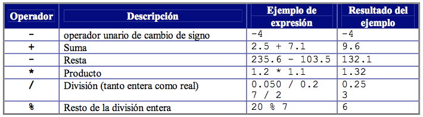

Para utilizar la operación de resta en el lenguaje Java se hace uso del operador "-".
Un operador es un símbolo matemático que indica que debe ser llevada a cabo una operación especifica sobre un cierto número de operandos.
| Operadores Aritmeticos |
| Operadores Lógicos o Booleanos |
| Operador Condicional |
| Operadores de Bits |
El lenguaje de programación Java tiene varios operadores aritméticos para los datos numéricos enteros y reales. En la siguiente tabla se resumen los diferentes operadores de esta categoría.
A continuación se muestra un video donde se explica que es un operador y los distintos operadores que se pueden utilizar en Java
Lo primero que debemos hacer es declarar variables que usaremos y crear una clase Scanner para pedir los datos al usuario que se restaran
int numero1;
int numero2;
int resultado;
Scanner reader = new Scanner(System.in);
Luego le pedimos al usuario que ingrese los dos números a restar
System.out.println("Introduce el primer número:");
numero1 = reader.nextInt();
System.out.println("Introduce el segundo número:");
numero2 = reader.nextInt();
Ahora solo procedemos a restar los números que se han ingresado
resultado = numero1-numero2;
Y mostramos el resultado en pantalla
System.out.println("La resta es " + numero1 + " - " + numero2 + " = " + resultado);
A continuación se encuentra un enlace hacia un compilador de Java online donde se ha implementado lo anterior mencionado
Compilador Java en linea